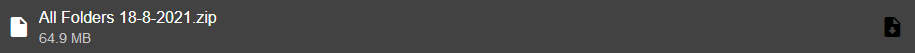

Recursos disponibles:
Stickers (Sanrio) Sets: 100 / Stickers: 3096
Emojis (Sanrio) Sets: 23 / Emojis: 920
Stickers (SanX) Sets: 77 / Stickers: 2304
Emojis (SanX) Sets: 12 / Emojis: 480
Planning: EMU *.iso's, Ad Collections, VHS RIPS/Scans, DVD-BD RIPS/Scans, Marketing Campaign Archives.
Voy a actualizar con más cosas y mirrors cuando tenga tiempo.
Todos los sets de stickers/emojis se encuentran en un ZIP debajo de todas las carpetas.
*Los archivos están sujetos al bandwidthlimit de descargas de Google Drive. Si se encuentran saturados volvé más tarde.
